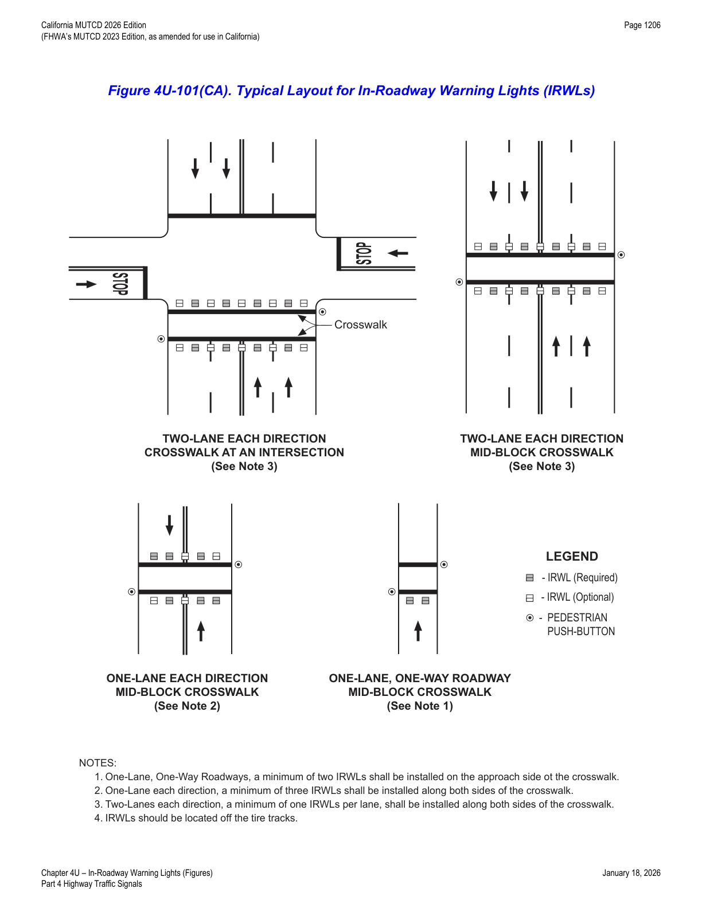

Part 4 · Highway Traffic Signals · Chapter 4U
In-Roadway Warning Lights
Flush-mounted, roadway-surface warning lights at uncontrolled marked crosswalks — application limits, crosswalk installation requirements, and evaluation criteria.
4U.01Application of In-Roadway Warning Lights
Support — Background/Explanatory
- 01In-Roadway Warning Lights are special types of highway traffic signals installed in the roadway surface to warn road users that they are approaching a condition on or adjacent to the roadway that might not be readily apparent and might require the road users to reduce their speed and/or come to a stop. This includes situations warning of marked school crosswalks, marked midblock crosswalks, marked crosswalks on uncontrolled approaches, marked crosswalks in advance of roundabouts as described in Chapter 3D, and other roadway situations involving pedestrian crossings.
Standard — Mandatory Requirement
- 02In-Roadway Warning Lights shall not be used for any application that is not described in this Chapter.
- 03When used, In-Roadway Warning Lights shall be flashed and shall not be steadily illuminated.
Support — Background/Explanatory
- 04Steadily illuminated lights installed in the roadway surface are considered to be internally illuminated raised pavement markers (see Section 3B.14).
Option — Permissive
- 05In-Roadway Warning Lights may be flashed in a manner that includes a continuous flash of varying intensity and time duration that is repeated to provide a flickering effect (see Section 4U.02).
Guidance — Recommended Practice
- 06If used, In-Roadway Warning Lights should not exceed a height of ¾ inch above the roadway surface.
4U.02In-Roadway Warning Lights at Crosswalks
Option — Permissive
- 01In-Roadway Warning Lights may be installed at certain marked crosswalks, based on an engineering study or engineering judgment, to provide additional warning to road users.
Standard — Mandatory Requirement
- 02If used, In-Roadway Warning Lights at crosswalks shall be installed only at marked crosswalks with applicable warning signs. They shall not be used at crosswalks controlled by YIELD signs, STOP signs, traffic control signals, or pedestrian hybrid beacons. If In-Roadway Warning Lights are used at a crosswalk, the following requirements shall apply:
- A. Except as provided in Paragraphs 7 and 8 of this Section, they shall be installed along both sides of the crosswalk and shall span its entire length.
- B. They shall initiate operation based on pedestrian actuation and shall cease operation at a predetermined time after the pedestrian actuation or, with passive detection, after the pedestrian clears the crosswalk.
- C. They shall display a flashing yellow light when actuated. The flash rate shall be at least 50, but not more than 60, flash periods per minute. If they are flashed in a manner that includes a continuous flash of varying intensity and time duration that is repeated to provide a flickering effect, the flickers or pulses shall not repeat at a rate that is between 5 and 30 per second to avoid frequencies that might cause seizures.
- D. They shall be installed in the area between the outside edge of the crosswalk line and 10 feet from the outside edge of the crosswalk.
- E. They shall face away from the crosswalk if unidirectional, or shall face away from and across the crosswalk if bidirectional.
Support — Background/Explanatory
- 02aRefer to FHWA's List of Known Errors for error in paragraph numbering in this section. Refer to Section 1A.04 for more details.
Standard — Mandatory Requirement
- 03If used on one-lane, one-way roadways, a minimum of two In-Roadway Warning Lights shall be installed on the approach side of the crosswalk. If used on two-lane roadways, a minimum of three In-Roadway Warning Lights shall be installed along both sides of the crosswalk. If used on roadways with more than two lanes, a minimum of one In-Roadway Warning Light per lane shall be installed along both sides of the crosswalk.
Guidance — Recommended Practice
- 04If used, In-Roadway Warning Lights should be installed in the center of each travel lane, at the center line of the roadway, at each edge of the roadway or parking lanes, or at other suitable locations away from the normal tire track paths.
- 05The location of the In-Roadway Warning Lights within the lanes should be based on engineering judgment.
Option — Permissive
- 06On one-way streets, In-Roadway Warning Lights may be omitted on the departure side of the crosswalk.
- 07Based on engineering judgment, the In-Roadway Warning Lights on the departure side of the crosswalk on the left-hand side of a median may be omitted.
- 08Unidirectional In-Roadway Warning Lights installed at crosswalk locations may have an optional, additional yellow light indication in each unit that is visible to pedestrians in the crosswalk to indicate to pedestrians in the crosswalk that the In-Roadway Warning Lights are in fact flashing as they cross the street. These yellow lights may flash with and at the same flash rate as the light module in which each is installed.
Guidance — Recommended Practice
- 09If used, the period of operation of the In-Roadway Warning Lights following each actuation should be sufficient to allow a pedestrian crossing in the crosswalk to leave the curb or shoulder and travel at a walking speed of 3.5 feet per second to at least the far side of the traveled way or to a median of sufficient width for pedestrians to wait. Where pedestrians who walk slower than 3.5 feet per second, or pedestrians who use wheelchairs, routinely use the crosswalk, a walking speed of less than 3.5 feet per second should be considered in determining the period of operation.
- 10An audible information device should be used with In-Roadway Warning Lights to provide assistance for pedestrians with vision disabilities.
Standard — Mandatory Requirement
- 11If pedestrian push buttons (rather than passive detection) are used to actuate the In-Roadway Warning Lights, a PUSH BUTTON TO TURN ON WARNING LIGHTS/WAIT FOR GAP IN TRAFFIC (R10-25) sign (see Section 2B.58) shall be installed explaining the purpose and use of the pedestrian push button detector.
Support — Background/Explanatory
- 11aRefer to FHWA's List of Known Errors for error in Paragraph 11 text. Refer to Section 1A.04 for more details.
Standard — Mandatory Requirement
- 12Where the period of operation is sufficient only for crossing from a curb or shoulder to a median of sufficient width for pedestrians to wait, median-mounted pedestrian actuators shall be provided.
- 13If an audible information device is used in conjunction with In-Roadway Warning Lights, the audible information device shall not use vibrotactile indications or percussive indications.
Guidance — Recommended Practice
- 14If an audible information device is used in conjunction with In-Roadway Warning Lights, the audible message during the time that the lights are flashing should be a speech message that says, "Warning lights are flashing." The audible message should be spoken twice.
Standard — Mandatory Requirement
- 15The following shall be considered when evaluating the need for In-Roadway Warning Lights:
- A. Whether the crossing is controlled or uncontrolled.
- B. An engineering traffic study to determine if In-Roadway Warning Lights are compatible with the safety and operation of nearby intersections, which may or may not be controlled by traffic signals or STOP/YIELD signs.
- C. Standard traffic signs for crossings and crosswalk pavement markings are provided.
- D. At least 40 pedestrians regularly use the crossing during each of any two hours (not necessarily consecutive) during a 24-hour period.
- E. The vehicular volume through the crossing exceeds 200 vehicles per hour in urban areas or 140 vehicles per hour in rural areas during peak-hour pedestrian usage.
- F. The critical approach speed (85th percentile) is 45 mph or less.
- G. In-Roadway Warning Lights are visible to drivers at the minimum stopping sight distance for the posted speed limit.
- H. Public education on In-Roadway Warning Lights is conducted for new installations.
Option — Permissive
- 16Overhead or roadside Flashing Yellow Beacons may be installed in conjunction with In-Roadway Warning Lights. In-Roadway Warning Lights may be installed independently, but are not necessarily intended to be a substitute for standard flashing beacons. Engineering judgment should be exercised.
Guidance — Recommended Practice
- 17Typical applications of In-Roadway Warning Lights are shown in Figure 4U-101(CA).
- 18Where In-Roadway Warning Lights are located 200 feet or less from a grade crossing, an engineering study should be made to evaluate the placement and determine if queuing could impact the grade crossing.

In practice: the evaluation checklist in Paragraph 15 closely parallels the school-crossing-beacon worksheet in Section 4S.101(CA) (40 pedestrians/2 hours, 200/140 vph urban/rural split) but adds its own speed ceiling (85th-percentile approach speed of 45 mph or less) and a public-education requirement specific to a device most drivers rarely encounter.
★ Key Takeaways — Chapter 4U
- In-Roadway Warning Lights (IRWLs) are flush-mounted (max ¾ inch above the roadway), always flashing (never steady — steady lights are raised pavement markers under Section 3B.14), and restricted to the crosswalk applications described in this Chapter only.
- Never used at crosswalks controlled by YIELD, STOP, traffic signals, or pedestrian hybrid beacons; installed along both sides of the crosswalk spanning its full length (with limited departure-side omissions permitted on one-way streets or medians).
- Minimum light counts: 2 on one-lane one-way roadways, 3 per side on two-lane roadways, 1 per lane per side on roadways with more than two lanes; flash rate 50–60 per minute (with a flicker-pattern option that must avoid 5–30 pulses/second to prevent seizure risk).
- Pedestrian-actuated (push button or passive detection); a push-button installation requires an R10-25 sign, and any audible device must be spoken word only ("Warning lights are flashing," spoken twice) — never vibrotactile/percussive.
- Evaluation criteria mirror other pedestrian-device worksheets: ≥40 pedestrians/2 hours, 200/140 vph urban/rural vehicle volume, 85th-percentile approach speed ≤45 mph, adequate stopping sight distance, and public education for new installations.